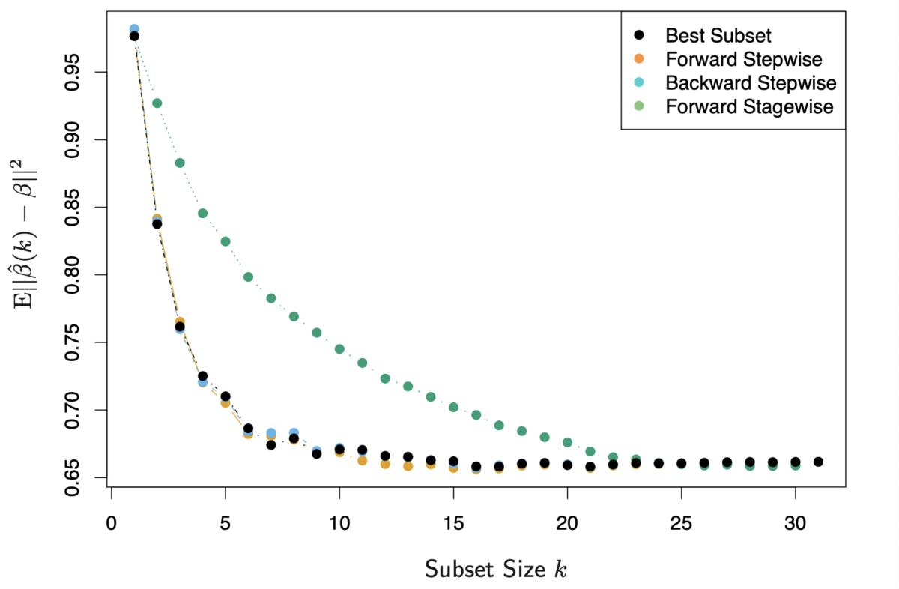

ESL 3: Linear Methods for Regression
一个线性回归模型假设回归函数 E(Y|X) 对于输入 X 是线性的。
它的优势在于：
- 简单
- 能够表示每个输入对输出的影响
- 输入可以进行变换
- 他们有时候比复杂的方法更精准，尤其是在样本数量少、低信噪比或者稀疏矩阵的情形。
3.2 Linear Regression Models and Least Squares
\(p\) 维线性回归模型形式如下：
\[f(X) = \beta_0 + \sum_{j=1}^p X_j \beta_j\]
我们需要估计一组参数 \(\beta\)，使残差平方和（Residual Sum of Squares）最小：
\[\begin{align}
\text{RSS}(\beta) &= (\textbf{y} - \textbf{X}\beta )^T(\textbf{y} - \textbf{X}\beta ) \\
&= \textbf{y}^T\textbf{y} - \textbf{y}^T\textbf{X}\beta - \beta^T\textbf{X}^T\textbf{y} + \beta^T\textbf{X}^T\textbf{X}\beta
\end{align}\]
其中，\(\textbf{X}\) 是一个 \(N \times (p+1)\) 矩阵，\(\textbf{y}\) 是 \(N \times 1\) 观测值。
对 \(\beta\) 求导可以得到：
\[ \frac{\partial \text{RSS}(\beta)}{\partial \beta} = -2 \textbf{X}^T\textbf{y} + 2\textbf{X}^T\textbf{X} \beta\]
由于二阶导数正定，令一阶导数为 0 向量，得出极值点（即估计值）：
\[ \hat{\beta}= (\textbf{X}^T\textbf{X})^{-1}\textbf{X}^T\textbf{y}\]
\[\hat{\textbf{y}} = \textbf{X} \hat{\beta} = \textbf{X}(\textbf{X}^T\textbf{X})^{-1}\textbf{X}^T\textbf{y}\]
我们称 \(\textbf{H} = \textbf{X}(\textbf{X}^T\textbf{X})^{-1}\textbf{X}^T\) 为估计矩阵（"hat" matrix），它满足对称性和幂等性：
\[\textbf{H}^T = \textbf{H}\]
\[\textbf{H}^T\textbf{H} = \textbf{H}\]
当 \(\textbf{X}\) 中某些列线性相关（即非满秩矩阵）时，\((\textbf{X}^T\textbf{X})\) 是奇异矩阵，它只能求广义逆矩阵，不止一个解。因此，我们需要将冗余的输入剔除掉，大部分求解软件都实现了这个功能。
估计参数的统计特性
为了确定估计的参数 \(\hat{\beta}\) 的统计特性，我们假设：
- 每个观测值 \(y_i\) 相互独立
- \(y_i\)有固定的噪声 \(\varepsilon \sim N(0, \sigma^2)\)
那么估计值 \(\hat{\beta}\) 的方差为：
\[ \text{Var}(\hat{\beta}) = (\textbf{X}^T\textbf{X})^{-1} \sigma^2\]
where:
\[\hat{\sigma}^2 = \frac{\text{RSS}}{N-p-1}= \frac{1}{N-p-1} \sum_{i=1}^{N} (y_i-\hat{y})^2\]
证明
N 个 y 的观测值可以表示为：
\[ \textbf{y} = \textbf{X}\beta + \varepsilon \]
其中 \(\varepsilon\) 是 \(N \times 1\) 的噪声。因此有：
\[\begin{align}
\hat{\beta} &= (\textbf{X}^T\textbf{X})^{-1}\textbf{X}^T\textbf{y} \\
&= \beta + (\textbf{X}^T\textbf{X})^{-1}\textbf{X}^T\varepsilon
\end{align}\]
无偏性（期望值为 \(\beta\)）：
\[E(\hat{\beta}) = \beta + (\textbf{X}^T\textbf{X})^{-1}\textbf{X}^T E(\varepsilon) = \beta\]
协方差矩阵（注意是\(\beta \beta^T\) 而非 \(\beta^T \beta\)，是一个矩阵）：
\[\begin{align}
\text{Var}(\hat{\beta}) &= E[(\beta - \hat{\beta})(\beta - \hat{\beta})^T] \\
&=E[(\textbf{X}^T\textbf{X})^{-1}\textbf{X}^T\varepsilon\varepsilon^T\textbf{X}(\textbf{X}^T\textbf{X})^{-1}] \\
&= (\textbf{X}^T\textbf{X})^{-1}\textbf{X}^T E(\varepsilon\varepsilon^T) \textbf{X}(\textbf{X}^T\textbf{X})^{-1} \\
&= \sigma^2 (\textbf{X}^T\textbf{X})^{-1}\textbf{X}^T \textbf{I} \textbf{X}(\textbf{X}^T\textbf{X})^{-1} \\
&= \sigma^2 (\textbf{X}^T\textbf{X})^{-1}
\end{align}\]
可以得到：
\[ \hat{\beta} \sim N(\beta, \sigma^2 (\textbf{X}^T\textbf{X})^{-1})\]
下面来确定 \(\sigma^2\) 。
我们可以通过观测值 \(y\) 和预测值 \(\hat{y}\) 的差来得到噪声 \(\varepsilon\)。
\[\begin{align}
y - \hat{y} &= \textbf{X}\beta + \varepsilon -\textbf{X}\hat{\beta} \\
&= \textbf{X}\beta + \varepsilon - \textbf{X}(\beta + (\textbf{X}^T\textbf{X})^{-1}\textbf{X}^T\varepsilon) \\
&= (\textbf{I -H} )\varepsilon
\end{align}\]
\[\begin{align}
\sum_{i=1}^N(y_i - \hat{y_i})^2 &= (y - \hat{y})^T (y - \hat{y}) \\
&= \varepsilon^T(\textbf{I - H}) \varepsilon \\
&= \sum_{k =1}^N \varepsilon_k^2- \sum_{i, j = 1}^N \varepsilon_i \varepsilon_j H_{ij}
\end{align}\]
其期望值为：
\[\begin{align}
E[\sum_{i=1}^N(y_i - \hat{y_i})^2] &= E[\sum_{k =1}^N \varepsilon_k^2- \sum_{i, j = 1}^N \varepsilon_i \varepsilon_j H_{ij} ] \\
&= N\sigma^2 - E(\sum_{i, j = 1}^N \varepsilon_i \varepsilon_j H_{ij})
\end{align}\]
由于 \(\varepsilon_i, \varepsilon_j\) 是独立的，当 \(i \neq j\) 时：
\[\text{Cov}(\varepsilon_i, \varepsilon_j) = E(\varepsilon_i \varepsilon_j) - E(\varepsilon_i)E(\varepsilon_j) = 0\]
因此：
\[\begin{align}
E[\sum_{i=1}^N(y_i - \hat{y_i})^2] &= N\sigma^2 - E(\sum_{i, j = 1}^N \varepsilon_i \varepsilon_j H_{ij}) \\
&= N\sigma^2 - E(\sum_{i=1}^{N}\varepsilon_i^2H_{ii}) \\
&= \sigma^2[N - \text{trace}(\textbf{H})]
\end{align}\]
这里再利用公式：
\[\text{trace}(ABC) = \text{trace}(CAB)\]
得到：
\[\begin{align}
E[\sum_{i=1}^N(y_i - \hat{y_i})^2] &= \sigma^2[N - \text{trace}(\textbf{H})] \\
&= \sigma^2[N - \text{trace}(\textbf{X}(\textbf{X}^T \textbf{X})^{-1} \textbf{X}^T)] \\
&= \sigma^2[N - \text{trace}(\textbf{X}^T \textbf{X}(\textbf{X}^T \textbf{X})^{-1}_{(p+1) \times (p+1)})] \\
&= \sigma^2[N - \text{trace}(\textbf{I}_{(p+1) \times (p+1)})] \\
&= \sigma^2(N - p -1)
\end{align}\]
因此，对 \(\sigma^2\) 的无偏估计就是：
\[\hat{\sigma}^2 = \frac{1}{N-p-1} \sum_{i=1}^{N} (y_i-\hat{y})^2\]
模型误差的统计特性
由于我们对第 i 个样本的噪声 \(\varepsilon_i\) 无偏估计就是 \(\hat{\varepsilon_i} = y_i - \hat{y_i}\)，我们计算其方差：
\[\begin{align}
\text{Var}(\hat{\varepsilon}) &= \text{Var}(\textbf{y} - \hat{\textbf{y}}) \\
&= \text{Var}[(\textbf{I} - \textbf{H}){\varepsilon}]
\end{align}\]
由于 \(D(AX) = AD(X)A^T\)：
\[\begin{align}
\text{Var}(\hat{\varepsilon}) &= \text{Var}[(\textbf{I} - \textbf{H}){\varepsilon}] \\
&= (\textbf{I} - \textbf{H}) \text{Var}(\varepsilon) (\textbf{I} - \textbf{H})
\end{align}\]
由于 \(\varepsilon \sim N(0, \sigma^2)\)，因此：
\[\text{Var}(\varepsilon) = \sigma^2 \textbf{I}_{N \times N}\]
而 \(\textbf{H} = \textbf{X}(\textbf{X}^T\textbf{X})^{-1}\textbf{X}^T\) 满足对称性和幂等性：
\[\textbf{H}^T = \textbf{H}\]
\[\textbf{H}^T\textbf{H} = \textbf{H}\]
因此有结论：
\[\text{Var}(\hat{\varepsilon}) = \sigma^2 (\textbf{I} - \textbf{X}(\textbf{X}^T\textbf{X})^{-1}\textbf{X}^T)\]
显著性分析
当我们判断哪些参数可以忽略以降低模型复杂度时，我们可以使用 F-statistic 进行显著性分析。假设我们将 \(\beta\) 维度从 \(p_1 + 1\) 降低到 \(p_0 + 1\)：
\[ F = \frac{(\text{RSS}_0 - \text{RSS}_1) / (p_1 - p_0)}{\text{RSS}_1 / (N- p_1 -1)} \]
F-statistic 描述了每个被忽略的参数对 RSS 的平均贡献，用 \(\hat{\sigma}^2\) 进行了 normalize。
当 \(p_1 - p_0 =1\) 即仅去掉一个参数时（假设 \(\beta_j = 0\)），该公式可以简化为对应的 z-score 的平方，其中 z-score 为：
\[ z_j = \frac{\hat{\beta}_j}{\hat{\sigma} \sqrt{v_j} }\]
where:
\[\hat{\sigma}^2 =\frac{\text{RSS}_1}{N-p-1} =\frac{1}{N-p-1} \sum_{i=1}^{N} (y_i-\hat{y})^2\]
\[v_j = (\textbf{X}^T\textbf{X})^{-1}_{jj}\]
证明
这个证明同时也是习题 3.1
Ex. 3.1 Show that the F statistic (3.13) for dropping a single coefficient from a model is equal to the square of the corresponding z-score (3.12).
实际上我们需要证明，在去掉模型的第 j 个参数后：
\[ \text{RSS}_0 - \text{RSS}_1 = \frac{\hat{\beta}_j^2}{v_j} \]
上式中唯一未知的就是 \(\text{RSS}_0\)，它实质上是求一个带约束的优化问题：
\[\begin{align}
\min_{\beta \in \mathbb{R}^{(p+1) \times 1}} (\textbf{y} - \textbf{X}\beta)^T(\textbf{y}-\textbf{X}\beta) \\
\text{s.t.} ~\beta_j = 0
\end{align}\]
我们可以用拉格朗日乘子法来解决。
\[L(\beta, \lambda) = (\textbf{y} - \textbf{X}\beta)^T(\textbf{y}-\textbf{X}\beta) + \lambda e_j^T \beta \]
对 \(\beta\) 求导，并令导数为 0，有：
\[\frac{\partial L(\beta, \lambda)}{\partial \beta} = - 2\textbf{X}^T(\textbf{y} - \textbf{X}\beta) + \lambda e_j = 0\]
解出：
\[\begin{align}
\beta_0 &= (\textbf{X}^T\textbf{X})^{-1} \textbf{X}^T\textbf{y} - \frac{\lambda}{2}(\textbf{X}^T \textbf{X})^{-1} e_j \\
&= \hat{\beta}- \frac{\lambda}{2}(\textbf{X}^T \textbf{X})^{-1} e_j
\end{align}\]
等式两边乘以 \(e_j^T\)，并带入\(\beta_j = 0\)，有：
\[\begin{align}
e_j^T\beta_0 = 0 &= e_j^T \hat{\beta} + \frac{\lambda}{2} e_j^T(\textbf{X}^T \textbf{X})^{-1} e_j \\
&= \hat{\beta}_j + \frac{\lambda}{2}v_j
\end{align}\]
因此有：
\[\lambda = - \frac{2\hat{\beta}_j}{v_j}\]
带入可得：
\[\begin{align}
\text{RSS}_0 &= (\textbf{y} - \textbf{X}\beta_0)^T(\textbf{y}-\textbf{X}\beta_0) \\
&= (\textbf{y} - \textbf{X}\hat{\beta} + \frac{\lambda}{2}\textbf{X}(\textbf{X}^T \textbf{X})^{-1} e_j)^T(\textbf{y}-\textbf{X}\hat{\beta} + \frac{\lambda}{2}\textbf{X}(\textbf{X}^T \textbf{X})^{-1} e_j) \\
&= \text{RSS}_1 + \frac{\lambda}{2} [e_j^T(\textbf{X}^T \textbf{X})^{-1}\textbf{X}^T(\textbf{y} - \textbf{X}\hat{\beta}) + (\textbf{y} - \textbf{X}\hat{\beta})^T \textbf{X}(\textbf{X}^T \textbf{X})^{-1} e_j)] \\
&~~~~ + \frac{\lambda^2}{4}e_j^T (\textbf{X}^T \textbf{X})^{-1} e_j \\
&= \text{RSS}_1 + \frac{\lambda^2}{4}e_j^T (\textbf{X}^T \textbf{X})^{-1} e_j \\
&= \text{RSS}_1 + \frac{\hat{\beta}_j^2}{v_j}
\end{align}\]
其中，中间项可以消去的原因是：
\[\textbf{X}^T(\textbf{y} - \textbf{X}\hat{\beta}) = \textbf{X}^T[\textbf{y} - \textbf{X}(\textbf{X}^T \textbf{X})^{-1}\textbf{X}^T\textbf{y}] = 0 \]
直观理解，\(\textbf{X}\) 和 \(\textbf{y} - \textbf{X}\hat{\beta}\) 是正交的，因为 \(\textbf{X}\hat{\beta}\) 正是 \(\textbf{y}\) 在 \(\textbf{X}\) 所在平面上的投影。
3.2.2 The Gauss–Markov Theorem
最小二乘法得出的 \(\beta\) 在所有线性无偏估计中均方误差最小。当然，如果我们愿意为了进一步减小误差引入一点 bias，完全可能找到一个更小均方误差的有偏估计。
the least squares estimates of the parameters β have the smallest variance among all linear unbiased estimates
现在我们来证明这个结论。对于线性估计：
\[\textbf{y} = \textbf{X}\beta\]
\(\textbf{y}\) 中的每一个元素都可以看作 \(\textbf{X}\) 中的一行与向量 \(\beta\) 的线性组合。
无偏性
那么，针对无偏性，我们需要证明最小二乘法估计出的 \(\hat{\beta}\) 满足：
\[ E(\alpha^T \hat{\beta}) = \alpha^T\beta\]
其中 \(\alpha\) 是任意向量。
\[\begin{align}
E(\alpha^T \hat{\beta}) &= E(\alpha^T (\textbf{X}^T\textbf{X})^{-1}\textbf{X}^T\textbf{y}) \\
&= E(\alpha^T (\textbf{X}^T\textbf{X})^{-1}\textbf{X}^T\textbf{X} \beta) \\
&= \alpha^T \beta
\end{align} \]
均方误差最小
Gauss–Markov theorem 指出，如果还存在其他线性估计 \(c^T \textbf{y}\) 满足：
\[ E(c^T \textbf{y}) = \alpha^T\beta\]
那么必然有：
\[\text{Var}(\alpha^T \hat{\beta}) \leq \text{Var}(c^T \textbf{y})\]
证明：
TBD
3.3 Subset Selection
最小二乘法的两个主要问题：
- 预测精度。虽然它是无偏的，但是方差很大。如果我们忽略一部分模型参数，虽然会变成有偏估计，但是可能会极大提高精度。
- 可解释性（即模型复杂度）。当模型参数很多时，我们想去确定一小部分具有最大影响的模型参数，为此我们愿意牺牲一部分无关紧要的参数。
因此，我们需要选取变量子集，即“model selection”。
3.3.1 Best-Subset Selection
最佳子集是指从所有具有 \(k (k <= p)\) 个变量的子集中，RSS 最小的那个。
当然，最简单的方式就是从遍历所有的组合。这样做的复杂度是 \(2^p\)，只适用于小规模的问题。
3.3.2 Forward- and Backward-Stepwise Selection
“前向逐步选择”是一种贪心算法。它按顺序加入最能提高拟合度的参数。它虽然不一定找到最优解，但是它优势在于：
- 运算量小。当维度 \(p >= 40\) 时，几乎无法算出最优解。但是依旧可以用 forward stepwise selection （即使维度 p 大于样本数 N）。
- 方差小。最优子集方差比 forward stepwise selection 大，虽然后者可能会有一定的 bias。

那么如何选择“最能提高拟合度“的参数呢？我们在之前“显著性分析”中已经证明了，去掉一个参数对残差的影响为其 z-score 的平方。那么，我们直接从 z-score 最大的参数开始依次加入即可。第 \(j\) 个参数的 z-score 可以由于下式计算：
\[ z_j = \frac{\hat{\beta}_j}{\hat{\sigma} \sqrt{v_j} }\]
where:
\[\hat{\sigma}^2 =\frac{\text{RSS}_1}{N-p-1} =\frac{1}{N-p-1} \sum_{i=1}^{N} (y_i-\hat{y})^2\]
\[v_j = (\textbf{X}^T\textbf{X})^{-1}_{jj}\]
“后向逐步选择” 与 “前向逐步选择“相反。它从全集开始，依次去掉最无关紧要的变量（z-score 最小的）。它只能用于样本数 N 大于维度 p 的情形。
3.4 Shrinkage Methods
Subset selection 确实可以帮我们简化模型，并且还可能降低误差。但是，因为它是一个离散的过程（参数要么被丢弃要么被保留，没有中间状态），它通常具有较大的方差。Shrinkage methods 更加连续，因此具有更好的性能。
3.4.1 Ridge Regression
Ridge Regression 通过给参数数量增加一个惩罚项来降低模型复杂度。它的优化目标：
\[\hat{\beta} = \mathop{\arg \min}_{\beta} \sum_{i=1}^N(y_i - \beta_0 - \sum_{j=1}^p x_{ij}\beta_j)^2 + \lambda \sum_{j=1}^p \beta_j^2\]
这里的 \(\lambda\) 控制模型“缩小”的程度，\(\lambda\) 越大，得到的模型复杂度越低。
值得注意的是，惩罚项中不包含常数项 \(\beta_0\)，否则模型不稳定。当选取 \(y_i = y_i + c\) 时，预测值 \(\hat{y}_i\) 的变化量不是 \(c\)。
与经典的 Linear Regression 不同，Ridge Regression 要求输入 \(\textbf{X}, \textbf{y}\) 是经过了中心化 (centering) 的。并且，这里的模型参数 \(\beta\) 是 \(p\) 维而不是 \(p+1\) 维的。
下面我们来证明这一点。
\(\beta_0\) 由于不含 \(\lambda\)，可以单独优化。我们先对 \(\beta_0\) 求导，并令导数为0:
\[\sum_{i=1}^N(y_i - \beta_0 - \sum_{j=1}^p x_{ij}\beta_j) = 0\]
得到：
\[\beta_0 = \frac{1}{N}(\sum_{i=1}^N y_i - \sum_{i=1}^N \sum_{j=1}^{p} x_{ij}\beta_j) \]
令 \(\overline{x_j} = \frac{1}{N} \sum_{i=1}^N x_{ij}\)，有：
\[\beta_0 = \frac{1}{N}\sum_{i=1}^N y_i - \sum_{j=1}^{p} \overline{x_{j}} \beta_j \]
我们以下的变形主要是为了将优化目标函数写成矩阵乘法形式，以进行运算。
\[\begin{align}
\hat{\beta} &= \mathop{\arg \min}_{\beta} \sum_{i=1}^N(y_i - \beta_0 - \sum_{j=1}^p x_{ij}\beta_j)^2 + \lambda \sum_{j=1}^p \beta_j^2 \\
&= \mathop{\arg \min}_{\beta} \sum_{i=1}^N(y_i - \beta_0 - \sum_{j=1}^p \overline{x_j}\beta_j - \sum_{j=1}^p (x_{ij} - \overline{x_j}) \beta_j)^2 + \lambda \sum_{j=1}^p \beta_j^2
\end{align}\]
现在我们令：
\[\begin{align}
\beta_0^c &= \beta_0 + \sum_{j=1}^p \overline{x_j}\beta_j =\frac{1}{N} \sum_{i=1}^N y_{i} \\
\beta_j^c&= \beta_j & (j>=1)
\end{align}\]
可以得出：
\[\begin{align}
\hat{\beta} &= \mathop{\arg \min}_{\beta^c} \sum_{i=1}^N(y_i - \beta_0^c - \sum_{j=1}^p (x_{ij} - \overline{x_j}) \beta_j^c)^2 + \lambda \sum_{j=1}^p {\beta_j^c}^2
\end{align}\]
我们再令：
\[\begin{align}
y_i^c &= y_i - \beta_0^c = y_i - \frac{1}{N} \sum_{i=1}^N y_i \\
x_{ij}^c&= x_{ij} - \overline{x_j} & (j >=1)
\end{align}\]
有：
\[\begin{align}
\hat{\beta} &= \mathop{\arg \min}_{\beta^c} \sum_{i=1}^N(y_i^c - \sum_{j=1}^p (x_{ij}^c \beta_j^c)^2) + \lambda \sum_{j=1}^p {\beta_j^c}^2 \\
&=\mathop{\arg \min}_{\beta} (\textbf{y} - \textbf{X}\beta)^T(\textbf{y} - \textbf{X}\beta) + \lambda(\beta^T\beta)
\end{align}\]
其中，\(\textbf{X}, \textbf{y}, \beta\) 都经过了中心化，并且是 \(p\) 维的。
该式对 \(\beta\) 求导并令导数为 0，有：
\[ -\textbf{X}^T(\textbf{y} - \textbf{X}\beta) + \lambda \beta = 0\]
解得：
\[ \beta = (\textbf{X}^T\textbf{X} + \lambda \textbf{I})^{-1} \textbf{X}^T \textbf{y}\]
我们看到，即使 \(\textbf{X}^T\textbf{X}\) 是非满秩的，由于多加了一个 \(\lambda \textbf{I}\)，它仍是一个可逆矩阵。这也是 ridge regression 的另一个优势。
Ridge Regression and SVD
奇异值分解 (singular value decomposition, SVD) 将一个矩阵分解为三个矩阵的乘积：
\[ \textbf{X}_{N \times p} = \textbf{U}_{N \times N} \mathbf{\Sigma}_{N \times p} \textbf{V}^T_{p \times p} \]
其中：
- \(\textbf{U}_{N \times N}\) 是一个单位正交矩阵，在 \(\mathbb{R}^{N \times N}\) 空间。它代表了旋转(rotation)
- \(\mathbf{\Sigma}_{N \times p}\) 是一个对角矩阵，但是不一定是方阵。它代表拉伸(scaling)
- \(\textbf{V}^T_{p \times p}\) 是一个单位正交矩阵，在 \(\mathbb{R}^{p \times p}\) 空间。它代表旋转(rotation)
对于普通的线性回归，有：
\[\begin{align}
\hat{y} = \textbf{H}y &= \textbf{X}(\textbf{X}^T\textbf{X})^{-1}\textbf{X}^Ty \\
&= \textbf{U}\mathbf{\Sigma}\textbf{V}^T(\textbf{V}\mathbf{\Sigma}^T\mathbf{\Sigma}\textbf{V}^T)^{-1} \textbf{V}\mathbf{\Sigma}^T\textbf{U}^T y \\
&= \textbf{U}\mathbf{\Sigma} (\mathbf{\Sigma}^T\mathbf{\Sigma})^{-1} \mathbf{\Sigma}^T\textbf{U}^T y \\
&= \textbf{U}\textbf{U}^T y
\end{align}\]
而对于 ridge regression，有：
\[\begin{align}
\hat{y} &= \textbf{X}(\textbf{X}^T\textbf{X} + \lambda \textbf{I})^{-1} \textbf{X}^T \textbf{y} \\
&= \textbf{U}\mathbf{\Sigma}(\mathbf{\Sigma}^T\mathbf{\Sigma} + \lambda \textbf{I})^{-1} \mathbf{\Sigma}^T\textbf{U}^T y
\end{align}\]
假设 SVD 分解的奇异值为 \(\sigma_1, \sigma_2, ... , \sigma_p\)，我们有：
\[\begin{align}
\hat{y} &= \textbf{U}\mathbf{\Sigma}(\mathbf{\Sigma}^T\mathbf{\Sigma} + \lambda \textbf{I})^{-1} \mathbf{\Sigma}^T\textbf{U}^T y \\
&= \sum_{j=1}^p \textbf{u}_j \frac{\sigma_j^2}{\sigma_j^2 + \lambda} \textbf{u}_j^T \textbf{y}
\end{align}\]
其中 \(\textbf{u}_j\) 表示矩阵 \(\textbf{U}\) 的第 \(j\) 列。
因此，从直观意义上理解，ridge regression 相比普通的 regression 就是对 \(\textbf{U}\) 的每一列附加了一个系数 \(\frac{\sigma_j^2}{\sigma_j^2 + \lambda} \leq 1\)。这个系数与该列对应的奇异值相关。而我们在 SVD 定义中知道 \(\sigma_j\) 代表了在 \(\textbf{u}_j\) 方向的缩放系数。显然，\(\frac{\sigma_j^2}{\sigma_j^2 + \lambda}\) 在 \(\sigma_j\) 越小时，shrinkage 越大。因此，直观理解，ridge regression 会倾向于忽略输入 \(\textbf{X}\) 方差较小的方向。
the small singular values correspond to directions in the column space of X having small variance, and ridge regression shrinks these directions the most.
这是个比较合理的假设，一般情况下，我们对于样本中几乎一样的输入参数并不是很关心.
Reference
- ESL solution
- ESL Chinese
- Simple Linear Regression
- Proofs involving ordinary least squares